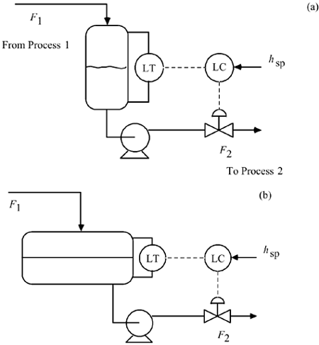

| [ Team LiB ] |
|
M10.1 BackgroundMuch of this text has focused on tracking setpoint changes, where the goal has often been to design a controller to yield a first-order type of response to a step setpoint change. There are many processes, however, where disturbance rejection (regulatory control) is more important than setpoint tracking, because setpoints may not be changed frequently. Consider the surge drum level control system shown in Figure M10-1. The purpose of the surge vessel is to smooth variations in the flow from process 1 and maintain a relatively constant flow rate to process 2. The level can vary substantially from the setpoint, as long as the vessel does not overflow or go dry. The main objective is to vary the manipulated flow rate (the outlet flow from the vessel) as little as possible, while satisfying level constraints. Figure M10-1. Surge vessel level control. (a) Vertical orientation. (b) Horizontal orientation. The goal of this module is to develop guidelines for tuning level controllers for surge vessels. The performance specifications are significantly different than for the steam drum level systems studied in the previous module. |
| [ Team LiB ] |
|